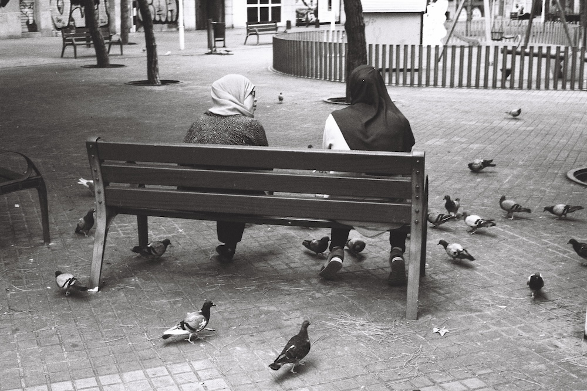
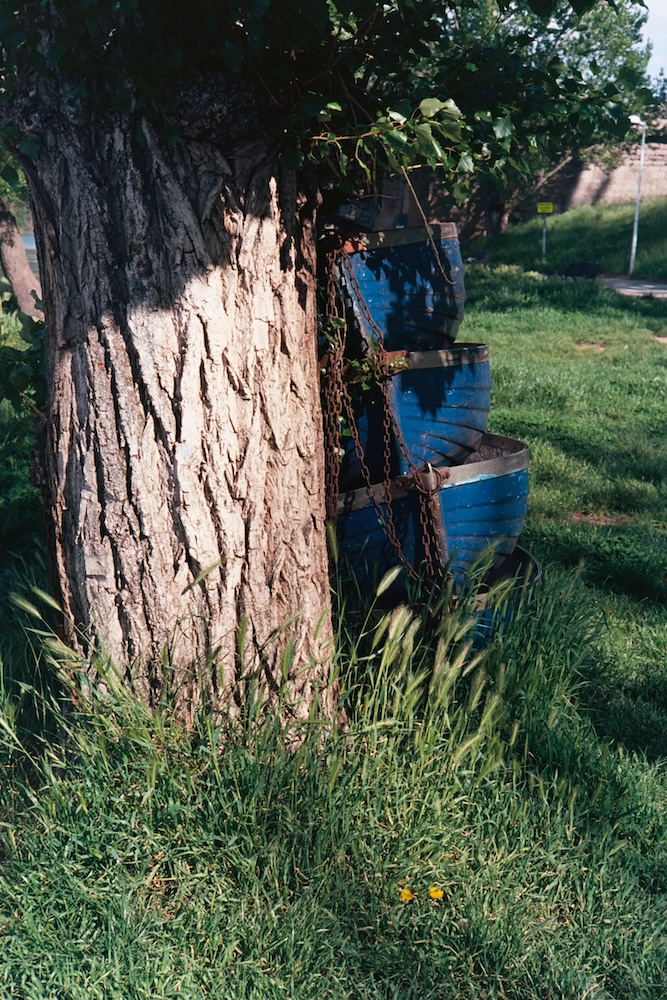
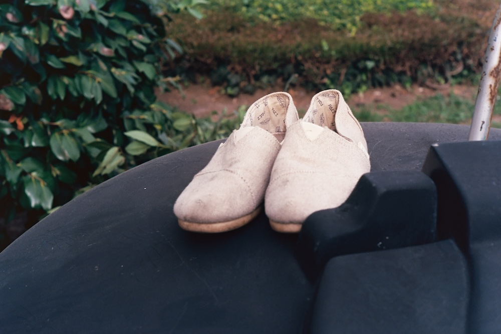
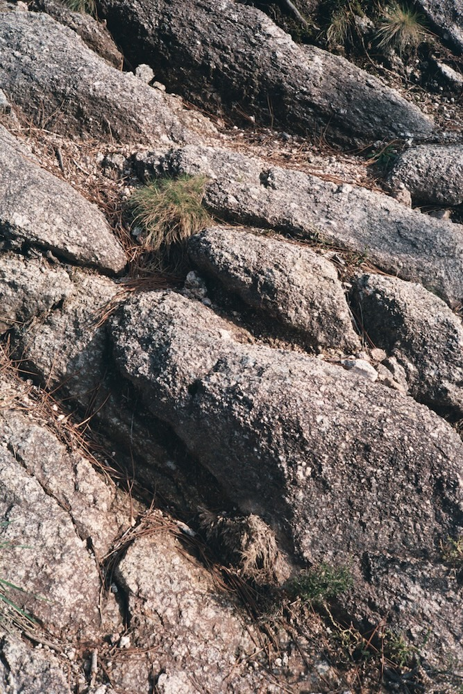
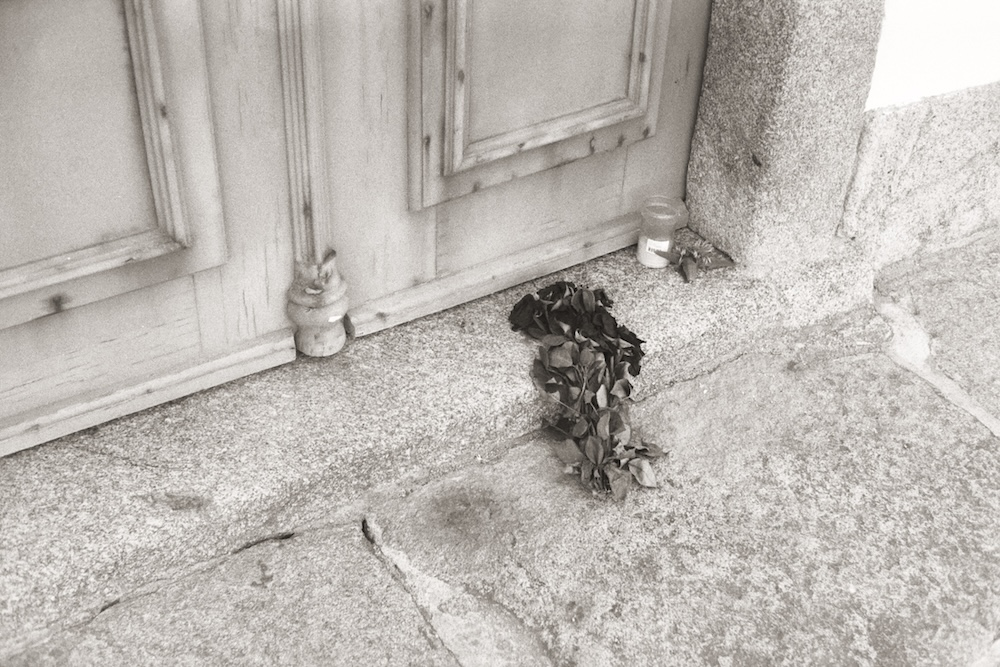
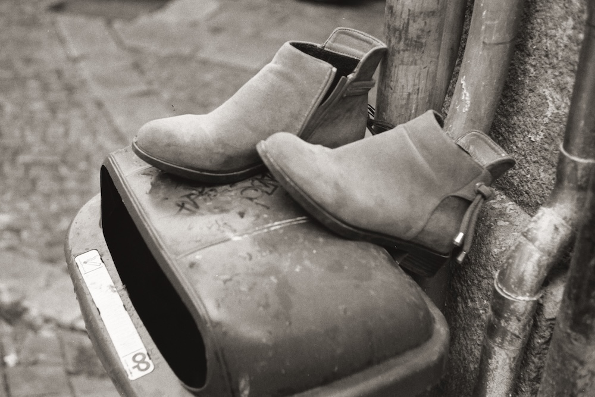

Things Betwixt


And people between.

I sometimes take photos of places or things that seem meaningless but that i like nonetheless. I am very fond of them precisely because they bring focus to what can otherwise be pointless.
While these photos are still appropriate for sharing without context in social media, i think they are still deserving of recognition and organization.
This project is an attempt to give these photos meaning by adding context and linearity.


